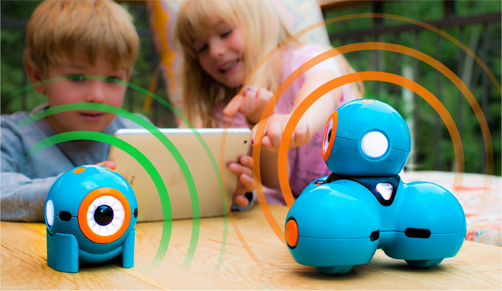

News
8月20日より開校し、体験入学を開催しています。

トライアルに申し込む Google Form
体験レッスンは以下の日程で開催されます。
お役立ち情報
教育、プログラミングなどに関する有益な情報を提供します。
Comiru（コミル）について
Comiru(コミル)は代官山校とご家庭の連絡を円滑にするツールです。
Dash君と遊びながら英語とプログラミングの基礎を学ぼう!
WonderCodeは、シリコンバレーに本社を置くワンダーワークショップとの提携により生まれた教育カリキュラムです。WonderCodeは、Dashを教材として、英語で体系的にプログラミングを学ぶことができ、世界中の学校で採用されています。

トライアルに申し込む Google Form
体験レッスンは以下の日程で開催されます。
Comiru（コミル）について
Comiru(コミル)は代官山校とご家庭の連絡を円滑にするツールです。